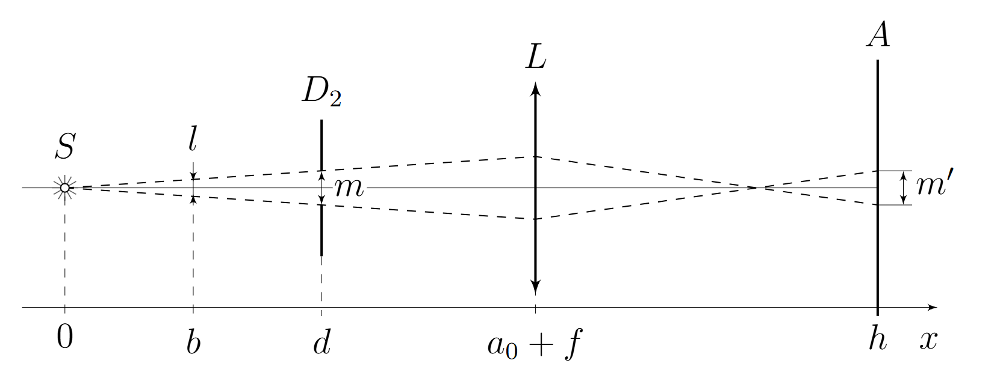
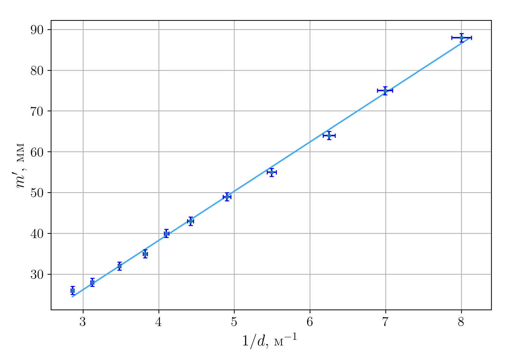
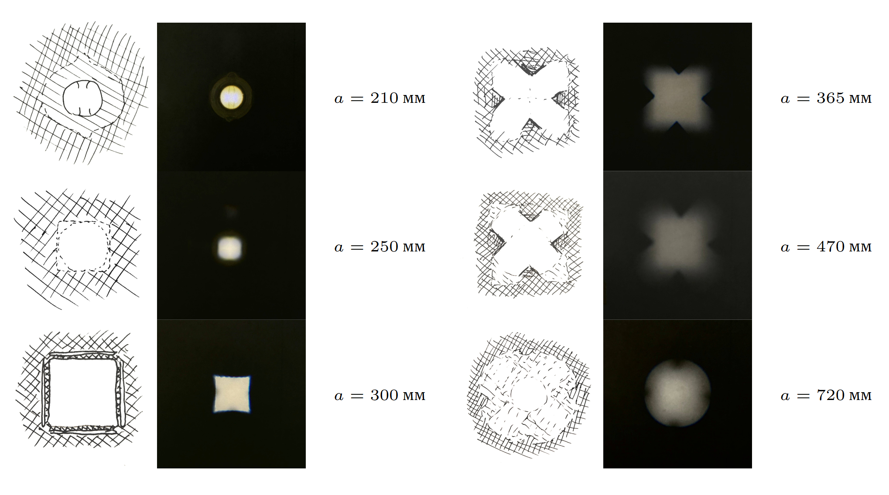
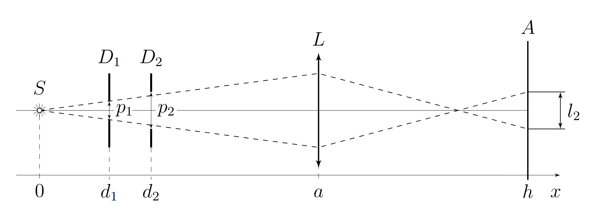
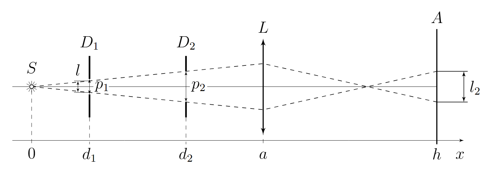
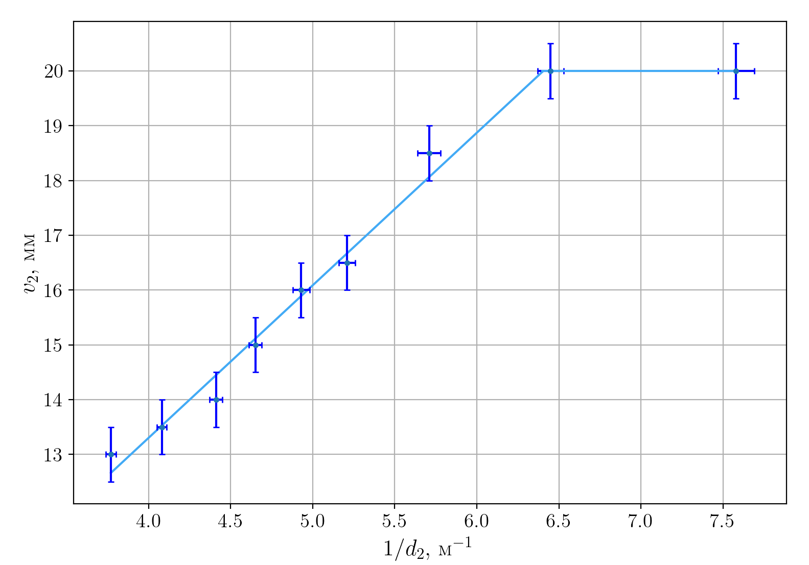
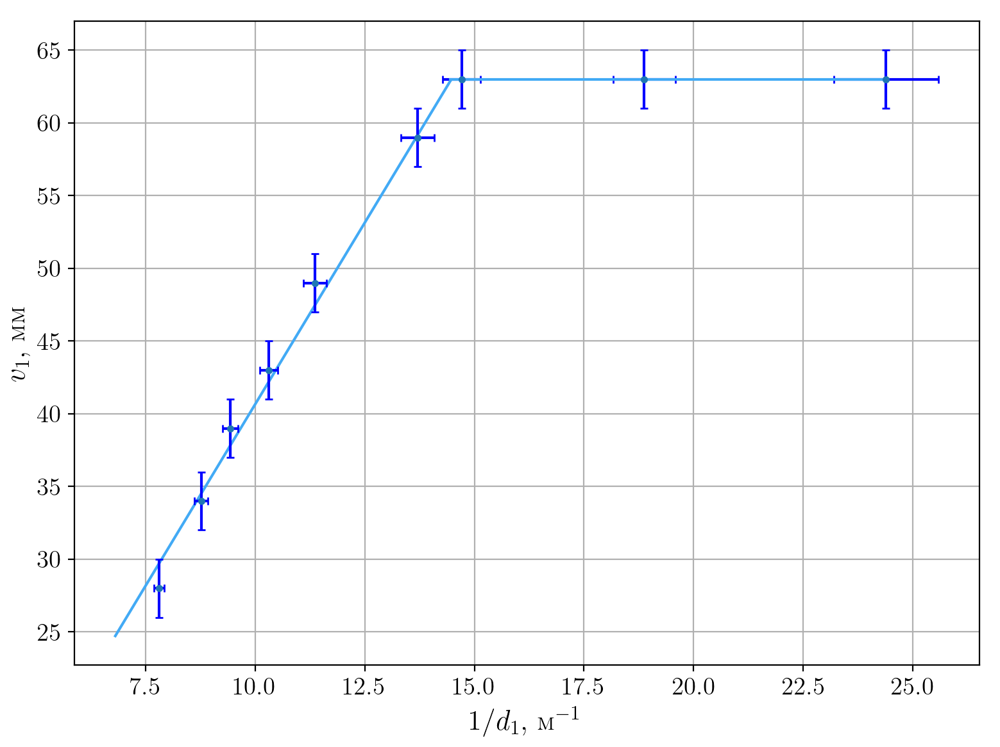

X26 (2026) — English translation
$a,~\mathrm{mm}$ $b,~\mathrm{mm}$ $f,~\mathrm{mm}$ 210 828 167.5 225 694 169.9 235 620 170.4 252 528 170.5 280 429 169.4
As the aperture approaches the source, the brightness of the image increases; as the aperture moves away from the source, its brightness decreases.
$d,~\mathrm{mm}$ $m1',~\mathrm{mm}$ $m2',~\mathrm{mm}$ $1/d,~\mathrm{m}^{-1}$ $m',~\mathrm{mm}$ 50 88 88 20.0$±$0.80 88 75 88 88 13.3$±$0.36 88 100 88 88 10.0$±$0.20 88 125 88 88 8.00$±$0.13 88 143 85 85 6.99$±$0.10 85 160 64 64 6.25$±$0.08 64 182 55 55 5.49$±$0.06 55 204 49 49 4.90$±$0.05 49 226 43 43 4.42$±$0.04 43 244 40 40 4.10$±$0.03 40 262 35 35 3.82$±$0.03 35 287 32 32 3.48$±$0.02 32 321 28 28 3.12$±$0.02 28 350 27 27 2.86$±$0.02 27 $\pm$2 $\pm$1 $\pm$1 $\pm$1
Let us highlight with a dotted line a plane at a distance $b$ from the source, which is focused by the lens onto the screen. It is obvious that from this plane only rays limited by the dotted line will reach the screen. Then we can consider an image of size $m'$ on the screen as an image of a segment of length $l$ in the indicated plane. $$l = \frac{m}{d}\cdot b$$Then size image on screen: $$m' = l \cdot \frac{h-a_0-f}{a_0+f-b}$$Formula thin lens: $$\frac{1}{f} = \frac{1}{a_0+f-b} + \frac{1}{h-a_0-f}$$From which: $$a_0+f-b = f\cdot \frac{h-a_0-f}{h-a_0-2f}$$Исключая $b$ obtain: $$m'=-\frac{m}{fd}(h-a_0-2f)\cdot( f\cdot \frac{h-a_0-f}{h-a_0-2f}-a_0-f)$$$⟦1 3⟧$Substitute $h-a_0$ from the thin lens formula: $$h-a_0 = \dfrac{a_0f}{a_0-f}$$$$m' = \frac{m}{d}\cdot\left(\frac{a_0}{a_0-f}(2f - a_0) - f\right) = \frac{m}{d}\cdot\left(\frac{a_0f}{a_0-f}-(a_0+f)\right)$$Линеаризация: $$m'(1/d)$$Dots which lie on the plateau - aperture by the lens; we will not plot them on the graph, because they are not needed to calculate the slope factor.
From the resulting graph we learn the slope coefficient of the line: $$k_1 = (1.21\pm0.06) \cdot 10^{-2}~\text{m}^2$$ Express $m$ ч: $$m=\frac{k_1}{\frac{a_0f}{a_0-f}-(a_0+f)}$$ Итого: $$m = 21~\mathrm{mm}$$ $$\Delta m = 3~\mathrm{mm}$$
$$k_1 = (1.21\pm0.06) \cdot 10^{-2}~\text{m}^2$$
Let's express $m$ h:
$$m=\frac{k_1}{\frac{a_0f}{a_0-f}-(a_0+f)}$$
Total:
$$m = 21~\mathrm{mm}$$
$$\Delta m = 3~\mathrm{mm}$$


Commentary on pictures. $a=210~\mathrm{mm}$ - focused LED; $a=250~\mathrm{mm}$ - blurry circle (almost a square); $a=300~\mathrm{mm}$ - focused square (stripes along the edges are reflections from the edges); $a=365~\mathrm{mm}$ - cross, almost focused, cut into a square; $a=470~\mathrm{mm}$ - cross, cut into a square, blurred; $a=720~\mathrm{mm}$ - a cross cut off by a circle (lens), very blurred.
Commentary on pictures.

$$a_1 = 295~\mathrm{mm}$$
$d_2,~\mathrm{mm}$ $v_2,~\mathrm{mm}$ $1/d_2~\mathrm{m}^{-1}$ 132 20 7.58$±$0.11 155 20 6.45$±$0.08 175 18.5 5.71$±$0.07 192 16.5 5.21$±$0.05 203 16 4.93$±$0.05 215 15 4.65$±$0.04 227 14 4.41$±$0.04 245 13.5 4.08$±$0.03 265 13 3.77$±$0.03 $±$2 $±$0.5
$$a_2 = 382~\mathrm{mm}$$
$d_1,~\mathrm{mm}$ $v_1,~\mathrm{mm}$ $1/d_1,~\mathrm{m}^{-1}$ 22 63 45.4$±$4.13 41 63 24.3$±$1.19 53 63 18.8$±$0.71 68 63 14.7$±$0.43 73 59 13.7$±$0.38 88 49 11.3$±$0.26 97 43 10.3$±$0.21 106 39 9.43$±$0.18 114 34 8.77$±$0.15 128 28 7.81$±$0.12 $±$2 $±$2
It is clear from the figure that for small $d_2$ the image will look like the distribution of light intensity in the section $D_1$, and will not change when $d_2$ changes, up to a certain value ($d_2 = d_2'$).
Starting from $d_2'$, some of the rays passing through the diaphragm $D_1$ will not pass through the diaphragm $D_2$. This moment occurs when the angular dimensions of the diaphragms are the same. Then: $$d_2' = \frac{p_2}{p_1} \cdot d_1.$$ Now find $l_2$. Similarly part B3 can consider segment $l$ in plane $D_1$ ограниченный крайнии ray pass through through diaphragm $D_2$ (or $D_1$, if $d_2 $$d_2' = \frac{p_2}{p_1} \cdot d_1.$$ Now let's find $l_2$. Similar to point B3, we can consider the segment $l$ in the plane $D_1$ limited by the extreme rays passing through the diaphragm $D_2$ (or $D_1$, if $d_2 $$l_2 = \frac{h-a}{a-d_1} \cdot l,$$ Where: $$ l = \begin{cases} p_1,& при ~d_2 < d_2'\\ \frac{d_1}{d_2} \cdot p_2,& при~ d_2 > d_2'\\ \end{cases}$$  
Having written equations similar to C4, we get the answer:
Using the result of the previous paragraph for point $С2$ we can match $$ \begin{cases} p_1 = c\\ p_2 = n\sqrt{2}\\ l_2 = v_2\\ a = a_1 \end{cases}$$ then we get:
For C3: $$\begin{cases} p_1 = c\sqrt{2}\\ p_2 = m\\ l_1 = v_1\\ a = a_2 \end{cases}$$ Total we get:
Linearization - $v_2(1/d_2)$.
From the graph we find the slope coefficient, the size of the image on the plateau, and the break point: $$k_2 = 2.78 \cdot 10^{-3}~\mathrm{m}^2\\v_{2}' = 20~\mathrm{mm}\\d_{2}' = 156~\mathrm{mm}$$

Linearization - $v_1(1/d_1)$
From the graph we find the slope coefficient, the size of the image on the plateau, and the break point: $$k_3 = 4.99 \cdot 10^{-3}~\mathrm{m}^2\\v_{1}' = 63~\mathrm{mm}\\d_{1}' =69~\mathrm{mm}$$
